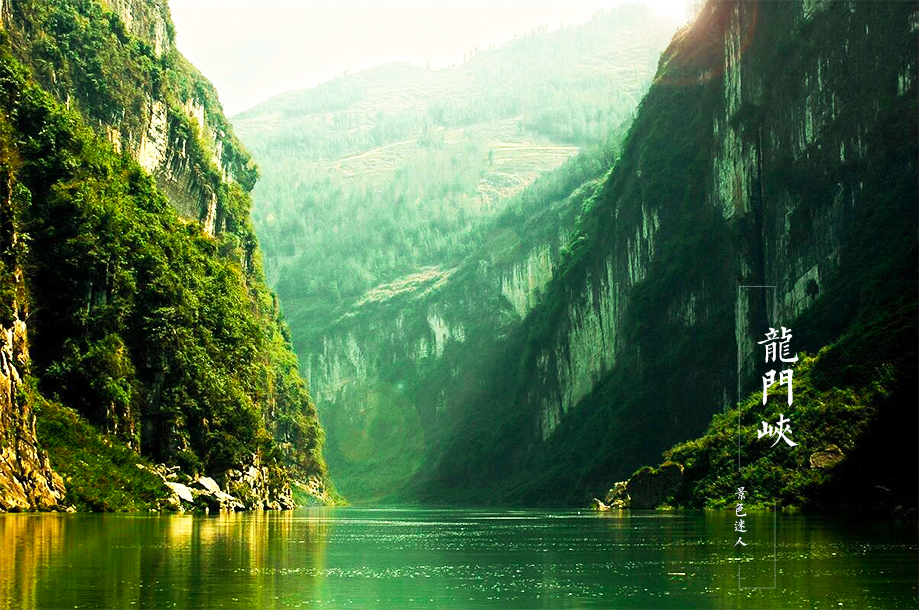

Through the isthmus, the first one will see a hole, which is the place where peng shui came to the official line of the unitary Yang. In 1686, pengshui county made him pass by the area, where the scenery was fascinating, and asked the man, "what is the name of this place?" The passerby answered him: "the pig drill hole". When he heard it, he thought of his surname, and felt very inelegant, so he took the pen as the "longmen gorge". From then on, it was renamed longmen gorge. The mountains rise, and the mountains fill the mountains. Peng is located in the wuling mountain, known as the "king of the fungus" bigfoot fungi, big feet, just grow foot big head small, grow mature behind small feet, hence the name. Bigfoot is a natural and natural wild green food. It comes from the deep mountain forest, which is about 1, 200 meters above sea level. It is only one season long, and the growth cycle is short, and the period is two to three days. And they can't be raised artificially, they can only be picked in the hills. Bigfoot can only be picked in the green hills. Bigfoot bacteria are rich in vitamins and protein, and are of high nutritional valueIt has the function of nourishing, reducing pressure, invigorating spleen, hairdressing, regulating metabolism and heat. Bigfoot has a yellow-brown and white variety. The smell is strong, can be Fried, can be cooked, can be stewed, is the rare and precious valuable product that the family eats, gives the VIP. Bigfoot, unlike other species, is a special property of wulingshan. Other provinces and cities have no. Here, I will introduce you to the specialty of wulingshan. Stewed chicken feet bacteria: 50 g first take one feet bacteria soak 30 minutes after rinse with warm water, rinse and then a pot of chicken and just the right amount of water, add green onion (tie), ginger, garlic, with high heat until boiling, to chicken stew cooked, finally add feet bacteria and tenderly braised the flavor, according to their own tastes can add salt, MSG serve.
